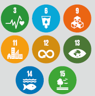
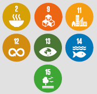
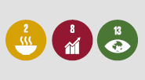
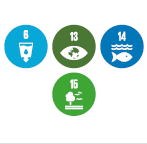
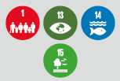
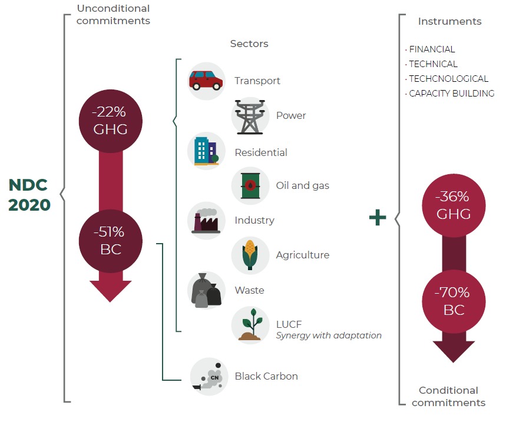

This document constitutes an update of Mexico's Nationally Determined Contribution (NDC) in accordance with the General Law on Climate Change (LGCC, by its acronym in Spanish) and pursuant to decisions 1/CMA.2 and 1/CP.21 and Article 4 of the Paris Agreement.
The Government of Mexico hereby ratifies the commitments submitted to the United Nations Framework Convention’s Secretariat in 2015 under the United Nations Framework Convention on Climate Change (UNFCCC), as well as its interest in working collaboratively with the international community in order to keep the increase in global temperature well below 2°C and to pursue additional efforts to limit to 1.5°C, by acting both on adaptation and mitigation actions on equal degrees of importance. The mitigation component considers unconditional contributions, which will be implemented with the country's own resources, and conditional contributions, which require the support of financial, technical and technological instruments, as well as capacity-building which will accelerate the implementation of mitigation actions across the country.
The adaptation component reflects a greater understanding of the country's vulnerability to the impacts of climate change, and it includes 5 general themes, or axes, and 27 lines of action focused on implementation.
This document features the criteria employed by Mexico to define the scope of the NDC’s update, the expanded adaptation component, and the strengthened mitigation component.It also contains, as a single annex, information pertaining to 4/CMA.1 of the Katowice Rulebook on the Enhanced Transparency Framework regarding implementation and monitoring of the NDC.
Through this NDC update, Mexico ratifies its commitment to tackle climate change, a global effort that requires, today more than ever, the action of all countries. Our world and our civilization are facing a far-reaching crisis with multiple facets; the adverse effects of climate change which represent systemic and ecological imbalances, exacerbated by an economic growth model that has not considered the limits of the environment and the planetary ability to maintain life-supporting systems; a loss of traditions and biocultural wealth that characterize our societies, where extreme poverty is a disruptive manifestation of an exclusionary and predatory growth model; and a health crisis, which reminds us that the degradation of ecosystems and the excessive exploitation of wildlife is linked intrinsically to our health, compromising the social and economic well-being of our common home.
The SARS-CoV2 pandemic has forced nations to rethink their development models. In this context, Mexico’s NDC update within the framework of the Paris Agreement establishes the basis for moving towards a responsible and sustainable recovery. The Mexican Government recognizes the close link between environmental protection and well-being of the population as a necessary condition to access other dimensions of well-being such as health, food security and employment. In light of this, Mexico has adopted the United Nations 2030 Agenda for Sustainable Development and its 17 Sustainable Development Goals (SDGs) as the guiding axis for this inclusive development.
Actions planned to be undertaken within the framework of the NDC consider the synergies between the adaptation and mitigation components as well as their relationship with the SDGs and other international conventions. As a result, Mexico has focused its public policies on poverty abatement with an orientation that seeks to lay the foundations for a more balanced, and equitable sustainable development, following the premise established in the National Development Plan 2019-2024 of "leaving no one behind, leaving no one out".
The adverse effects of climate change threaten the exercise of fundamental human rights: access to a healthy environment, health, food, drinking water, adequate housing, education, and culture, as well as the right to self-development and to life itself1 . With this awareness, the inseparable link between the protection of human rights and action against climate change is becoming increasingly evident. The consequences of the adverse effects of this global phenomenon are even more serious for individuals and groups in vulnerable social, economic and environmental situations, including women, indigenous and Afro-Mexican communities, children, youth, migrants, people with disabilities, sexual minorities, low-income groups, and the elderly2 .
Mexico is amongst the top 20 emitters of the 195 considered by the United Nations. In the last 20 years, its position has shifted between the 11th and the 13th place. While the first to ten emitters are responsible for around 66% of the total emissions, it is rather clear that Mexico has a myriad of opportunities to undertake changes leading to the diversification of its energy matrix, and to lead transformational changes in its productive sector focusing on the population´s welfare and in the protection and sustainable use of its cultural and natural wealth.
The effects of climate change are already tangible in the national territory, thereby confirming that adaptation and risk reduction are tasks that cannot be postponed, so they must be integrated into socioeconomic planning and development. In the last 50 years, average temperatures in the country have increased approximately 0.85°C above the climate normal, or climatological normal, in line with the global increase reported by the Intergovernmental Panel on Climate Change (IPCC)3 .
Minimum and maximum temperatures show a trend towards an increase in warm nights and a decrease of cold ones throughout the country4 . Regarding precipitation, observations show that the spatial and temporal distribution has changed in a differential way throughout the territory, even though the volume has remained constant. These situations have impacts on ecological and productive systems that are highly sensitive to temperature and precipitation variations, resulting in economic loss, which may increase in the future under climate change scenarios.
In order to fulfill the mandate to increase the population’s engagement in the construction of the NDC, during 2020, a participatory process was conducted nationwide. This process included Ministries of State, through the Intersecretarial Commission on Climate Change (CICC, by its acronym in Spanish), as well as state governments, scholars, social organizations, the private sector, and the public. It is noteworthy to underline the participation of young generations who have shown leadership and a growing commitment in addressing climate change. Their active participation in this participatory process allowed for the inclusion of their concerns and proposals in this document. In addition, as a result of this process, the NDC enhances its means of implementation to meet the objectives of development of science and technology, encouraging research, education, training, social awareness, access to information and citizen participation within a framework of constant technological innovation in order to achieve full territorialization and engagement in adaptation and mitigation actions.
Mexico has strengthened the means and mechanisms to implement its climate policy and the NDC itself, through its incorporation into the LGCC. It has also taken strong steps to integrate and execute actions that address climate change in programs, projects, and actions at different orders of government that will serve as enhanced mechanisms for the implementation of the NDC.
The Mexican Government ratifies its commitment to implement the NDC respecting human rights, integrating a gender equality approach, prioritizing the needs of vulnerable groups, and promoting the inclusion and recognition of science and traditional knowledge of native indigenous communities under the principle of intergenerational equity. Reports on the progress of the NDC’s implementation will incorporate the objectives and goals of the Lima Work Program on Gender and the UNCCD Gender Action Plan. As a signatory of the Escazú Agreement, Mexico will abide by the objectives of the Universal Declaration of Human Rights, under the principle of equal rights between women and men, as well as the elimination of all forms of discrimination against women.
In this context, as a middle-income developing country, Mexico is committed to foster south-south and triangular cooperation in order to support other countries in achieving more ambitious adaptation and mitigation goals in accordance with national development priorities for each country. Mexico will focus on scientific and technological cooperation as well as the promotion of research capacity building regarding adaptation and mitigation, and considering its strategic position, will strive to develop partnerships with Latin America and the Caribbean to foster regional development.
Lastly, Mexico recognizes that cooperation and climate finance are tools that can bolster the implementation of its commitments and expresses its interest in advancing and implementing Article 6 of the Paris Agreement in order to increase its climate ambition. Therefore, the Mexican Government reaffirms the call on the international community to adopt Conference of the Parties, the required rules to make this mechanism operational and thus allow for cost-effective international cooperation, enhancing a greater participation of the private sector in global mitigation.
Mexico is a megadiverse country with coastline on both the Atlantic and the Pacific oceans5 unique in its biological wealth at the continental, coastal and marine levels. In addition, it has a vast and diverse cultural heritage that results in a wide range of languages and cultural identities. Since the presentation of its first NDC in 2015, the country has acted upon its commitments regarding adaptation, addressing local vulnerability in order to protect its biological and cultural diversity and richness.
In recent decades, knowledge on vulnerability to climate change, thus reaffirming that adaptation and the reduction of risks to the population, ecosystems and productive sectors are not deferrable deeds.. The interaction of factors such Mexico’s position, environmental and socioeconomic conditions, along with a high social inequality, results in a country that is highly vulnerable to the potential impacts of climate change.
Recent studies, as well as the analysis of the information presented in special reports by the IPCC, provide solid ground for the construction of a National Adaptation Policy (NAP) foreseen by the LGCC whose objective is to guide the implementation of this component through collaborative, multi-sectoral processes that recognize the comprehensive, complex and urgent6 nature of adaptation.
This component expands its scope by integrating cross-cutting elements such as Nature-based Solutions (NBS) and Community-Based Adaptation (CBA) approaches; Ecosystem-Based Adaptation (EBA); as well as Disaster Risk Reduction (DRR) based Adaptation. The NDC is strengthened by incorporating the results of a nationwide participatory process, which considered all three orders of government,specialists, scholars, productive sectors, social organizations, youth and the public. Additional elements were included to strengthen the adaptive capacity of the country's population, its ecosystems as well as its strategic infrastructure and tangible cultural heritage. Consequently, the adaptation component increases its scope of action.
While defining actions included in this component, particular attention was given to identify the necessary means of implementation. This resulted in actions pertaining capacity building, knowledge generation, scientific research and education, technological transfer and development, as well as the consolidation of financial mechanisms required by adaptation actions that will be implemented during the period leading to 2030.
Consequently, this NDC update presents a greater ambition in the actions that will be undertaken in the territory and foresees the consolidation of Monitoring and Evaluation (M&E) mechanisms which will enhance the System for Information on Advances in Transparency (SIAT) of the Nationally Determined Contribution (SIAT – NDC). These actions will reinforce reporting mechanisms and provide further insights and transparency of the progress towards the reduction of vulnerability. This framework considers increased participation of different sectors and organizations involved in decision making and planning, thereby optimizing the use of. This, by recognizing opportunities and establishing requirements for adequate implementation with a long-term perspective.
The following sections present the five general axes included in the component and describe the 27 action lines identified in order to decrease the country’s vulnerability.
In Mexico, several social groups are particularly vulnerable to the impacts of climate change. Among them are indigenous and Afro-Mexican communities, the vast majority of whom live in impoverished, highrisk areas. On the other hand, the inequality that persists in Mexico, further stresses geographical vulnerability as well as age and gender disparities. Restricting women's access to means of production such as land, financing, training, education and information, all of which diminishes their adaptive capacity in the face of climate change.
These social and economic conditions, coupled with the increase of adverse hydro-meteorological phenomena, such as flooding and droughts, have forced people to leave their homes and seek new opportunities in other territories. These processes sometimes lead to conflicts and competition for resources that can aggravate pre-existing vulnerabilities.
Axis A is composed of seven lines of action whose main objective is to ensure the implementation of actions in the territory. It addresses the gaps in social inequality and aims to reduce the impacts associated with climate change by raising awareness among the population, providing access to information and developing tools for decision-making. This axis considers a preventive, long-term approach.
This section contributes towards the fulfillment of strategic issues related to 15 SDGs and 45 of its goals. Amongst the most salient are the following: Cities and human settlements adopting and implementing comprehensive policy and plans for climate adaptation; resilience of personas in climate vulnerability and reduction of their exposure; preventive health, considering gender equality criteria intersectionality and human rights, to mention a few elements.
The following table features actions, highlighting new commitments, existing synergies with mitigation and, where appropriate, linkages with the SDGs.
| Axis A. Prevention and management of negative impacts on the human population and the territory | |||
|---|---|---|---|
| ACTION LINES | NEW ACTION | SYNERGY WITH MTIGATION | SDG |
| A1. Implement actions in 50% of municipalities identified as vulnerable according to the National Vulnerability Atlas and the Special Climate Change Program 2020—2024, prioritizing those with the greatest social inequalities |  |
||
| A2. Implement comprehensive adaptation strategies that strengthen resilience in human settlements |  |
||
| A3. Strengthen early warning systems and protocols for prevention and action against hydro-meteorological and climatic hazards in different natural and human systems at all three levels of government |  | ||
| A4. Incorporate climate change adaptation criteria in planning instruments, territorial and disaster risk management in all sectors and orders of government |  | ||
| A5. Strengthen financial instruments for disaster and risk management and attention through the integration of climate change adaptation criteria |  |
||
| A6. Implementing strategies to reduce health impacts related to diseases exacerbated by climate change |  |
||
| A7. Identify and address forced displacement of people due to the negative impacts of climate change |  |
||
Food is a fundamental human right that is warranted when people have timely and permanent physical, economic, and social access to food in sufficient quantity and quality for adequate consumption. This right contributes both to their well-being and to the satisfaction of their dietary and cultural needs. In Mexico, the increase in temperature and changes in rainfall resulting from climate change may result in the displacement of traditional crops, which may become unsuitable for the region where they are currently produced. Similarly, the ecological structure and functions of marine ecosystems, as well as the goods and services they provide are expected to be altered. The conservation of agrobiodiversity, the battle against desertification and the reduction of overexploitation of land and marine natural resources, represent challenges closely related to food security.
Extensive cattle farming has important social and environmental impacts. The constant increase in the demand for livestock products accelerates the deforestation of large areas of forests and results in the pollution and depletion of water bodies. Furthermore, feeding and thermal comfort requirements for livestock, demand comprehensive strategies of sustainable management, such as the establishment of silvopastoral systems and regenerative cattle farming.
These considerations are addressed in Axis B, which proposes five action lines that support the fulfillment of 9 SDGs and 11 of its goals, related to the sustainability of food production systems and resilient agricultural practices that contribute to the maintenance of ecosystems and strengthen the countries adaptive capacity. It also address the fair and equitable distribution of benefits provided by genetic diversity and species diversification, as well as the adaptation of value chains and investment plans that integrate climate change criteria, fostering traditional knowledge that favors the reduction of inequality gaps, placing the rights, needs and realities of all people in a situation of vulnerability at the center of the processes of adaptation to climate change , encouraging research, development and application of scientific and traditional knowledge. The following table highlights new action lines, synergies, and connections with the SDGs.
| Axis B. Resilient production systems and food security | |||
|---|---|---|---|
| ACTION LINES | NEW ACTION | SYNERGY WITH MTIGATION | SDG |
| B1. Promote sustainable production and consumption practices, conservation of genetic resources and the recovery of biocultural landscapes |  |
 | |
| B2. Incorporate climate change risk into value chains and investment plans of productive sectors | |
 |
|
| B3. To contribute to the prevention and management of pests and diseases in domestic animal species and vegetable crops aggravated by climate change | |
 |
|
| B4. Strengthen environmental policy instruments and implement actions to ensure the protection of native crops relevant to agriculture and food security from the potential impacts of climate change | |
 |
|
| B5. Promote financing mechanisms that address the negative impacts of climate change on the primary productive sector | |
 | |
Biodiversity plays a key role in carbon sequestration and the regulation of the global climate through the ecosystem services it provides. Mexico is the 5th most diverse country in the world, home to approximately 12% of the planet's biodiversity.
A high percentage of the country's terrestrial and aquatic biodiversity is threatened by factors such as habitat destruction, over-exploitation of resources, air pollution, the presence of invasive exotic species and the adverse effects of climate change. The degradation and loss of ecosystems will increase the vulnerability of the population and biodiversity to the effects of climate change.
Human rights, such as the right to potable water and access to food, the right to health and a healthy environment are strongly dependent on ecosystems and the diversity they provide. This biodiversity is an intrinsic part of the traditions and culture of indigenous communities and, as such, it should be preserved.
In this sense, Axis C integrates crucial issues for the country based on the conservation and restoration of blue carbon ecosystems, seas and oceans, forests, and key species. It also integrates actions to strengthen the management of Natural Protected Areas and increase their connectivity. Additional conservation schemes are considered based on mutual respect for the collective rights and common goods7 belonging to the communities that inhabit them. Through these actions, this section seeks to integrate resilience and development, ensuring synergies for the mitigation of GHGs. The following table highlights new actions, synergies, and connections with the SDGs.
|
Axis C. Conservation, restoration and sustainable use of biodiversity and ecosystem services |
|||
|---|---|---|---|
| ACTION LINES | NEW ACTION | SYNERGY WITH MTIGATION | SDG |
| C1. Reach a zero-net deforestation rate by 2030 | |||
| C2. Strengthen environmental policy instruments and implement actions to conserve and restore continental ecosystems, increase their ecological connectivity, and promote their resilience |  |
||
| C3. Strengthen instruments and implement actions for the conservation of biodiversity and the restoration of marine, coastal and freshwater ecosystems, as well as to increase and permanence of carbon reservoirs, emphasizing blue carbon |  | ||
| C4. Promote actions to prevent the establishment, control and eradication of invasive species, diseases and pests, whose impacts are exacerbated by the effects of climate change |  |
||
| C5. Design and implement actions that contribute to control desertification and foster soil conservation |  |
||
| C6. Strengthen environmental policy instruments and implement actions to conserve and restore insular systems and increase their resilience |  | ||
| C7. Implement actions for the conservation and restoration of the seas and oceans to enhance their resilience in the face of climate change |  |
||
Water is one of the most valuable resources required for the integral and sustainable development of the country. Life and health, as well as the balance of ecosystems depend directly on water. This resource is crucial for social and economic development. Having access to water in sufficient quality and quantity is a human right that serves as a precondition for the exercise of other rights such as access to healthcare, food, a healthy environment, adequate housing and education. The adverse conditions generated by climate change can severely affect the availability of this resource.
The availability of water in Mexico is threatened. At least 14% of water basins are currently in deficit and 16% of aquifers are 8 . Constant water supply and modern sanitation in households is not universal. In rural zones, this percentage is lower than in urban areas, sharpening this situation in marginalized areas. Social asymmetries, as well as gender inequalities, affect the availability and accessibility of water in sufficient quantity and quality.
Axis D proposes four action lines to promote the integrated management of water resources and the improvement in the provision of services focusing on the most vulnerable communities. These actions, which will work towards 8 SDGs and 21 of its goals, address the following issues: efficient use of water resources in all sectors and sustainability of freshwater extraction and supply against shortages; capacity-building in activities and programs related to water and sanitation; promotion of climate technologies for water collection, efficient use of water resources, wastewater treatment, recycling, and reuse; protection and restoration of water-related ecosystems, including forests, mountains, wetlands, rivers, aquifers, and lakes; value integration of ecosystems and biological diversity into national and local planning, as well as strategies for development and poverty reduction. The following table shows new actions, synergies, and connections to the SDGs.
AXIS E. PROTECTION OF STRATEGIC INFRASTRUCTURE AND TANGIBLE CULTURAL HERITAGEStrategic infrastructure provides the technical means, necessary facilities, and services for the development of essential activities. Furthermore, it is a fundamental framework to guarantee human rights to health, security, physical integrity, well-being, and sustainable development of the population. Mexico has a tangible cultural heritage that includes both natural and cultural goods that, due to their natural, aesthetic, artistic or scientific value, contribute to the Mexican identity. This heritage is composed, on the one hand, of environmental weatlh and assets comprising that include natural areas, habitat and shelter of numerous endemic species, and on the other, of buildings, enclosures and archaeological vestiges that contain a historical legacy of societies that preceded the current one. The conservation of infrastructure and heritage represents challenges that will be exacerbated by the adverse effects of climate change. For example, energy sector infrastructure is vulnerable to climate variability, as severe droughts or rains can affect the optimal functioning of power generation plants9 . The four action lines of Axis E promote that the planning, design, construction, maintenance, and operation of infrastructure review focused on strengthening its resistance to ensure the continuity of the provision of services. The main of this axis is to ensure the resilience of new and existing infrastructure, as well as tangible cultural heritage, going beyond the usual designs and promoting the development and incorporation of criteria for adaptation and identification of science-based risks to climate change that integrate traditional and innovation knowledge to increase the strength of the elements that make it up. These actions incorporate knowledge on the risks generated by climate change and seek to adapt to current and future realities, integrating traditional and innovative knowledge to increase the strength of the elements that comprise them. Actions undertaken to protect tangible cultural heritage from the effects of climate change will consider the respect for spiritual or religious beliefs, as well as for the roles of women and men. They will seek to ensure the right to enjoy existing heritage and guarantee its accessibility and to promote the positive influence that culture, heritage and traditional knowledge provides for our society. Through these actions, Axis E will contribute to 9 SDGs and 21 of its goals; reliable, sustainable, resilient, high-quality, affordable and equitable infrastructure to support economic development and human well-being; resilience of infrastructure in cities and human settlements by implementing integrated policies and plans for climate change mitigation and adaptation, as well as integrated disaster risk management; protection and safeguard of cultural and natural heritage; modernization of infrastructure and converting industries to become sustainable. The following table shows new activities, synergies with mitigation and relationship with SDGs.
Mitigation ComponentMexico is unconditionally committed to reduce its greenhouse gas (GHG) emissions by 22% and its black carbon emissions by 51% by 2030 compared to a baseline under a business-as-usual (BAU) scenario. In addition, conditional commitments would allow for increased emissions mitigation, reaching a target of up to 36% reduction of GHG emissions and 70% of black carbon emissions by 2030 compared to the BAU. These commitments rely on the consolidation, at international level, of technology transfer mechanisms, an international price for carbon trading, adjustment of tariffs for carbon content, technical cooperation and access to low-cost financial resources, all on a scale equivalent to the challenge required to address climate change. The projected BAU scenario to 2030, without any mitigation policy intervention, was quantified at 991 MtCO2e. The reduction of unconditional emissions by 2030 translates into a reduction of approximately 210 MtCO2e that year, while compliance with conditional commitments would imply reductions of an additional 137 MtCO2e. The implementation period of this NDC ranges from 2020 to 2030 and the policies undertaken are considered based on the information for emissions in 2013.  In order to update this NDC and strengthen the country's climate action based on the best available knowledge, working groups were formed with representatives from the public, private and social sectors, each of which collaborated in the development of specific studies for each sector of the economy reflected in the NDC. As a result, taking advantage of a shared responsibility and the best interest of the sector’s stakeholders, it was possible to identify the most viable initiatives for implementation, the best cost-benefit ratio, and the greatest opportunities for reducing emissions in the short, medium, and long term. These studies, known as implementation routes10 , have been fundamental in defining sectoral and programmatic action lines, as well as in assessing potential reductions in black carbon (BC) and other short-lived climate pollutants (SLCPs). Likewise, the NDC identifies the synergies between the adaptation and mitigation components, thereby promoting the reduction of barriers to their implementation in the territory and enhancing co-benefits in the short and long term. Mexico recognizes that both adaptation and mitigation are key elements for the consolidation of more climate-resilient trajectories and that enhancing these synergies will have an end-to-end benefit for the country's development and they may generate structural changes and modifications in production and consumption patterns. Similarly, strengthening the benefits of these synergies in the short term will contribute to a better allocation of financial and institutional resources11 in the implementation of the NDC. Through integral and inter-institutional projects, conceptual elements will be generated to support transparency and reporting, which will shorten the conceptual gap between mitigation and adaptation contributing to science-based decision making. Regarding the 2030 Agenda for Sustainable Development, Mexico has dedicated efforts towards the global objectives of poverty eradication, protection of the planet, protection of environmental health and of the population to ensure that prosperity reaches everyone. Consequently, the affinity of policies and actions towards the Sustainable Development Goals (SDGs) has been evaluated. While the NDC is composed of specific measures, it is the result of a comprehensive approach that supports additional mitigation and development objectives. The results of these synergies are summarized in the following table, which highlights the sectors, focus on black carbon emissions, synergies with adaptation and connections with the SDGs.
| ||||||||||||||||||||||||||||||||||||||||||||||||||||||||||||||||||||||||||||||||||||||||||||||||||||||||||||||||||||||||||||||||||||||||||||||||||||||||||||||||||||||||||||||||||||||||||||||||||||||||||||||||||||||||||||||||||||||||||||||||||||||||||||||||||||||||||||||||||||||||||||||||||||||||||||||||||||||||||||||||||||||||||||||||